How to set up SSO integration with Microsoft Azure
Preprequisites
http://azure.microsoft.com account, admin access to that account
Steps
Azure setup
Go to https://portal.azure.com/, and click on ‘Azure Active Directory’ in the menu to your left, then on ‘Enterprise Applications’:
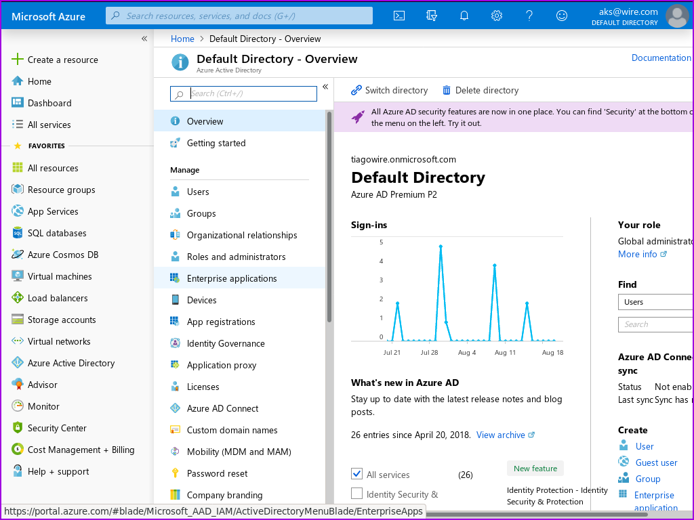Click on ‘New Application’:
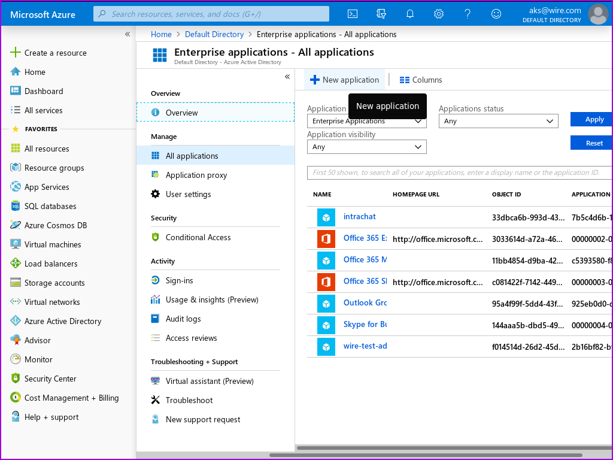Select ‘Non-gallery application’:
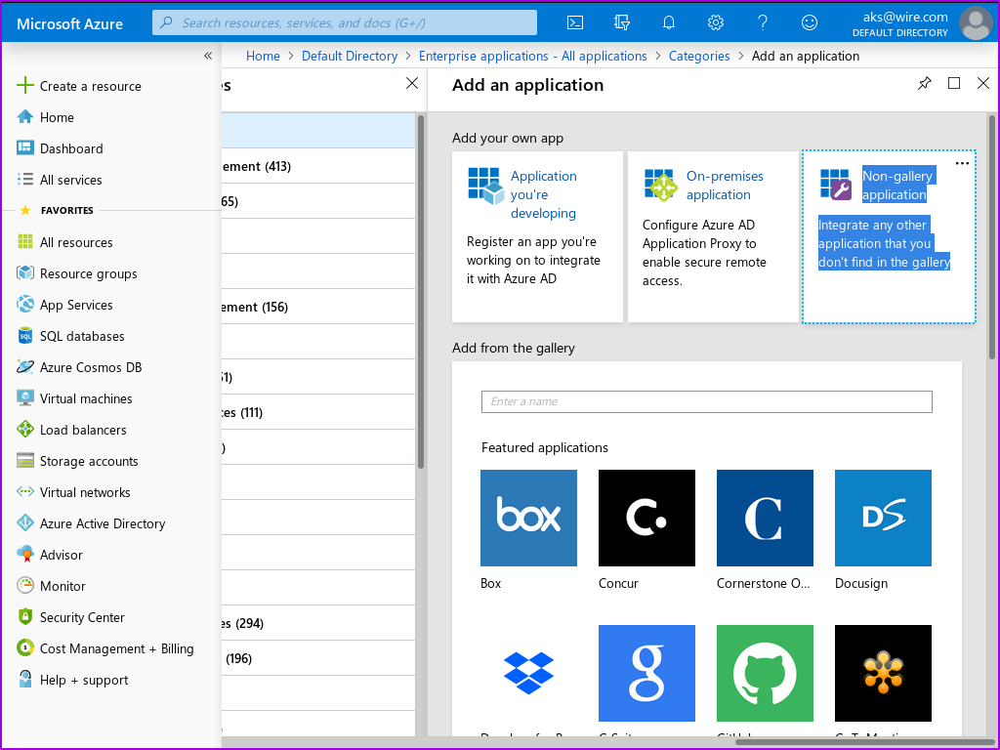Fill in user-facing app name, then click ‘add’:
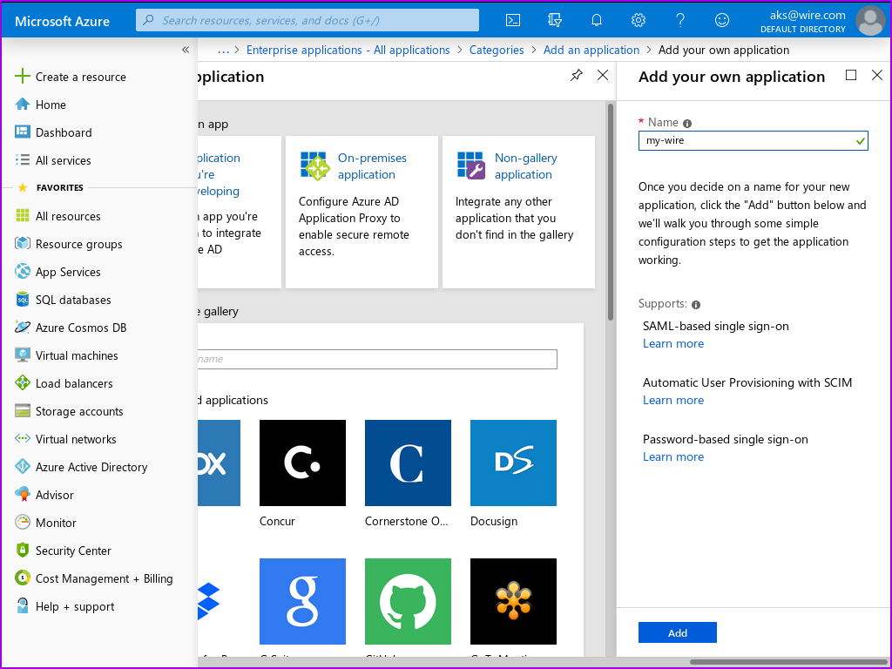The app is now created. If you get lost, you can always get back to it by selecting its name from the enterprise applications list you’ve already visited above.
Click on ‘Configure single sign-on’.
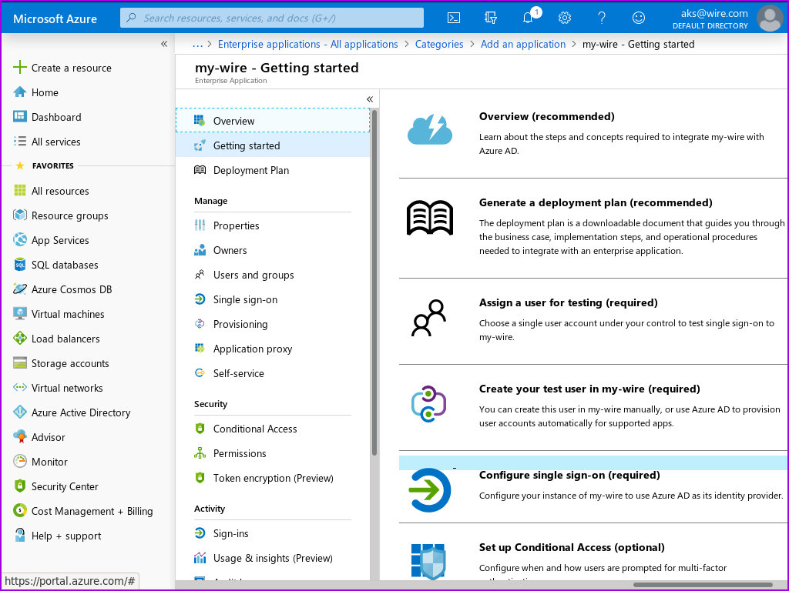Select SAML:
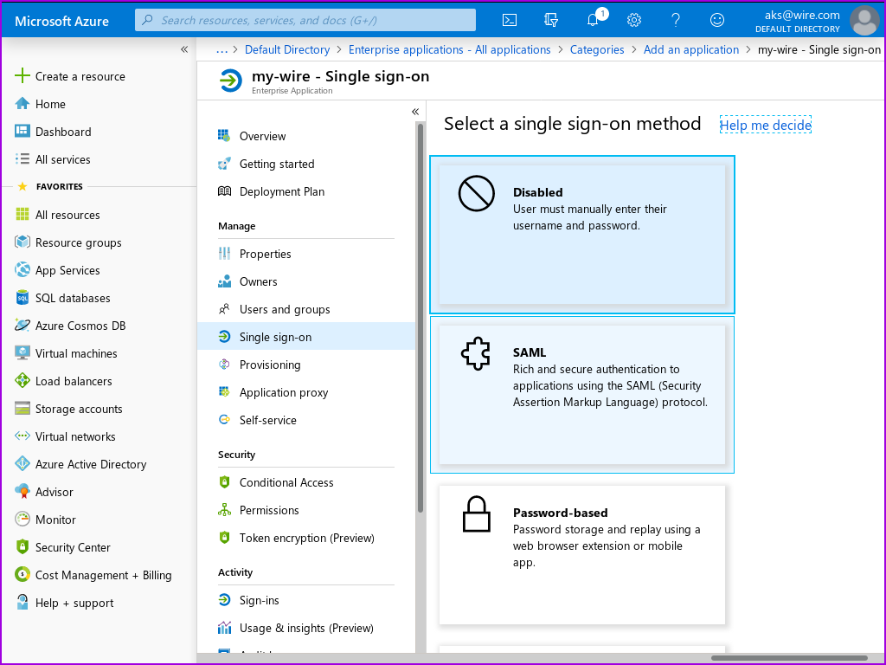On the next page, you find a link to a configuration guide which you can consult if you have any azure-specific questions. Or you can go straight to adding the two config parameters you need:
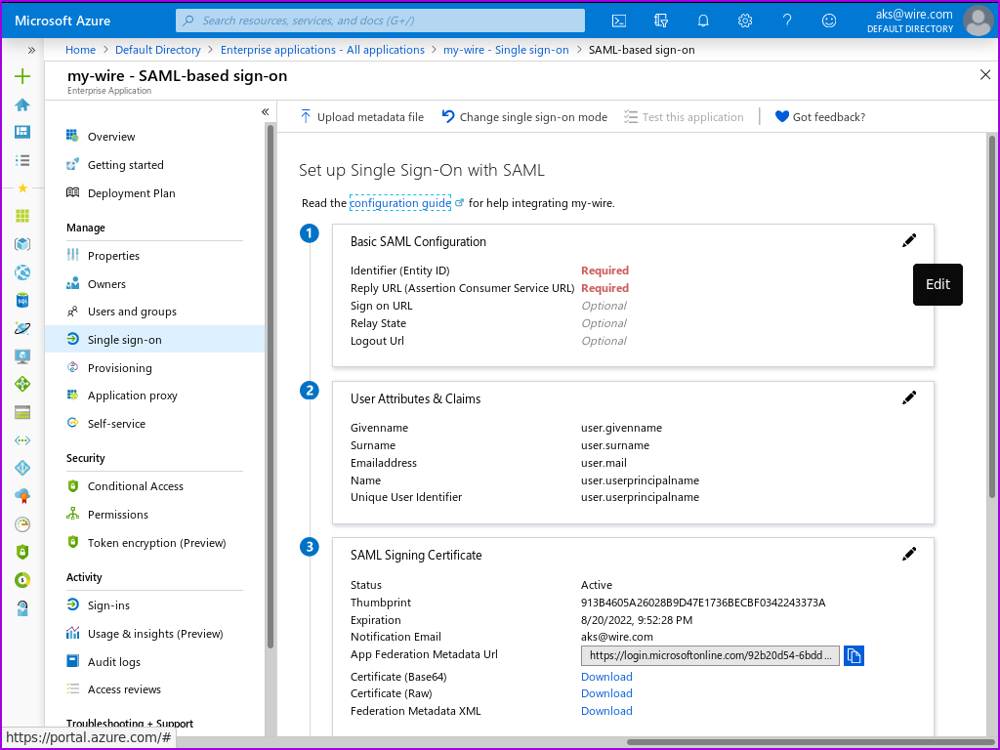Enter https://prod-nginz-https.wire.com/sso/finalize-login for both identity and reply url. Save.
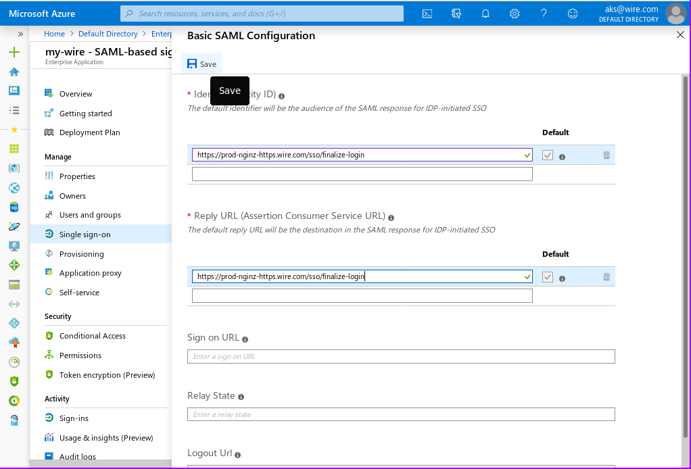Click on ‘test later’:
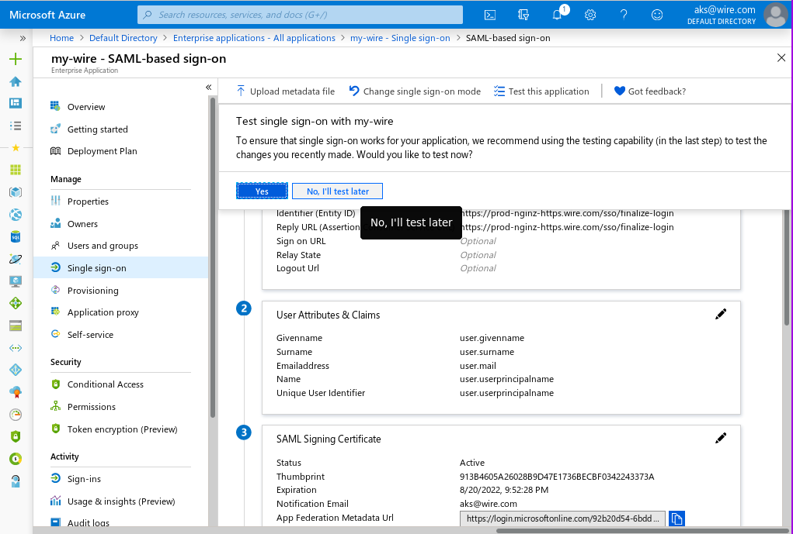Finally, you need to assign users to the newly created and configured application:
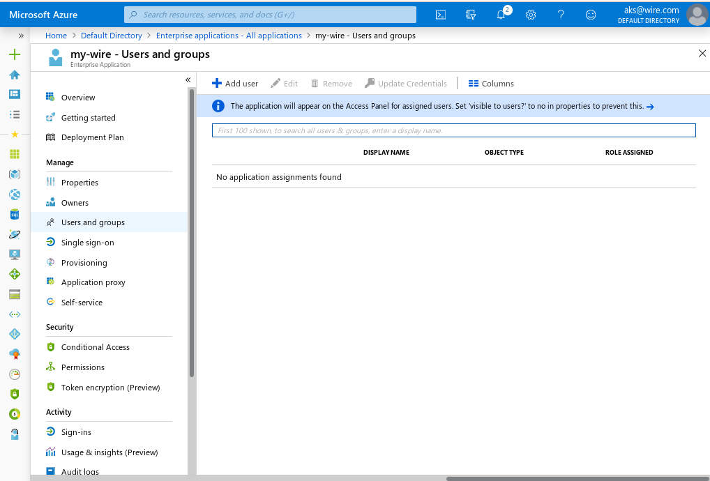 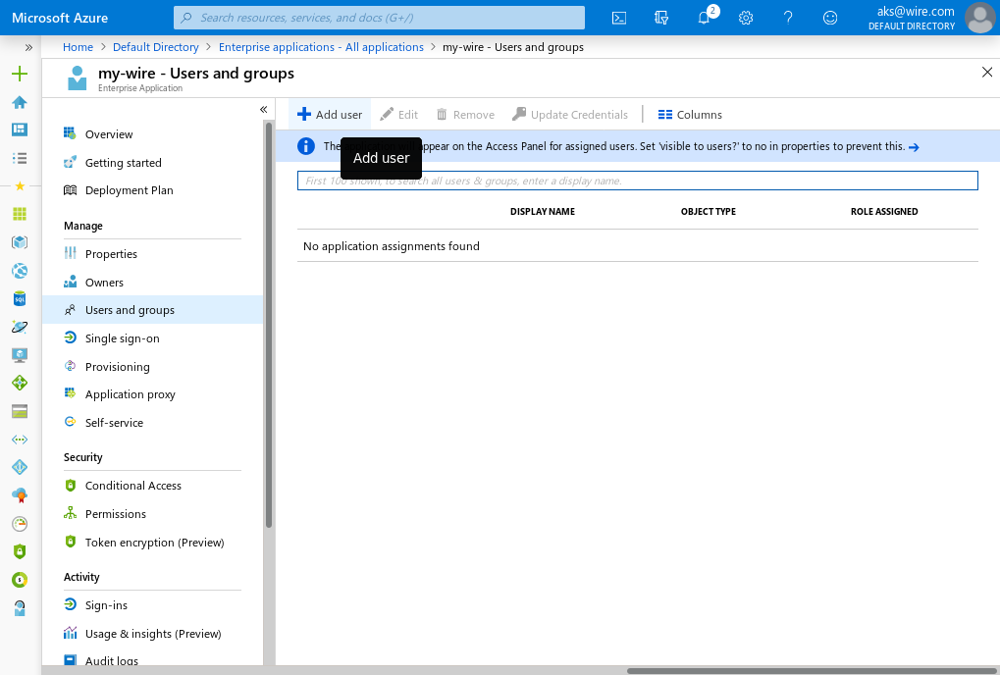 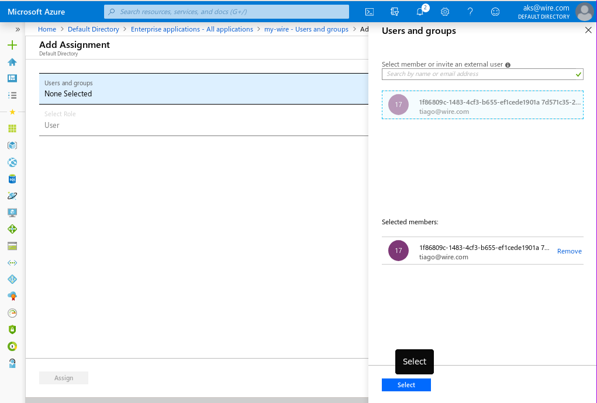 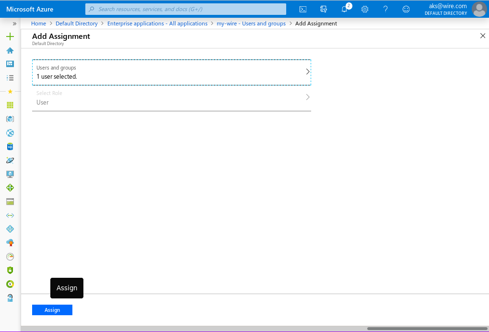 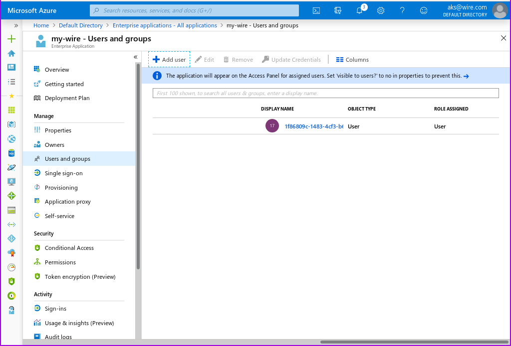And that’s it! You are now ready to set up your wire team for SAML SSO with the XML metadata file you downloaed above.
Further reading
technical concepts overview: : - https://docs.microsoft.com/en-us/azure/active-directory/develop/active-directory-saml-protocol-reference
how to create an app: : - https://docs.microsoft.com/en-us/azure/active-directory/develop/quickstart-register-app
how to configure SAML2.0 SSO: : - https://docs.microsoft.com/en-us/azure/active-directory/manage-apps/what-is-single-sign-on#saml-sso